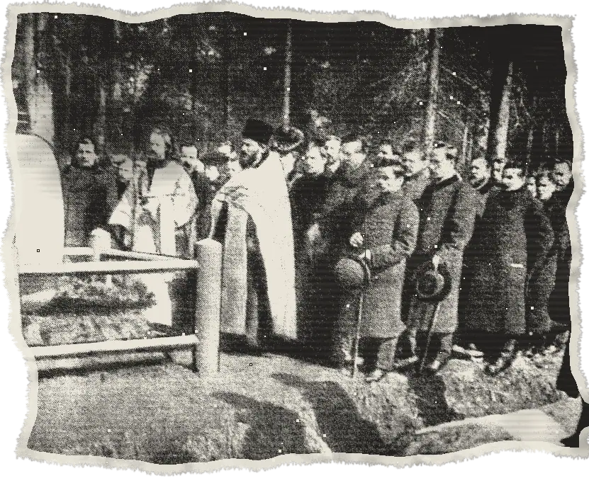
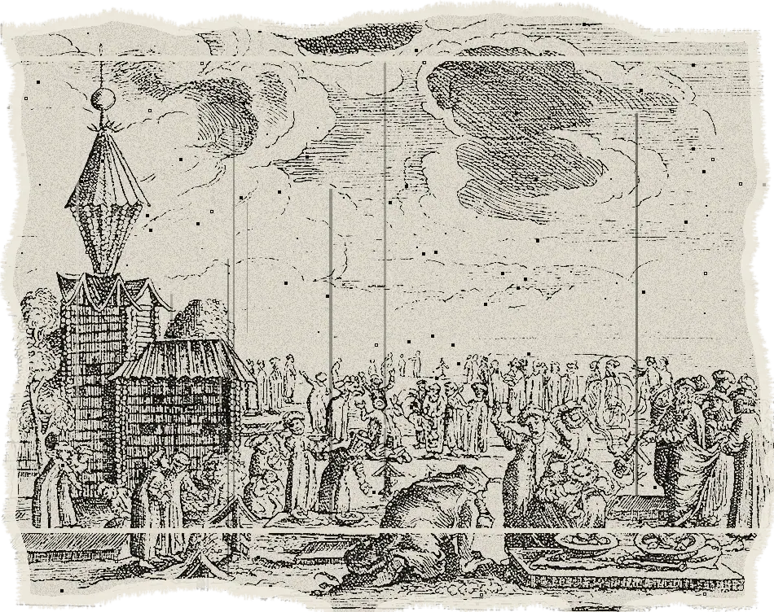
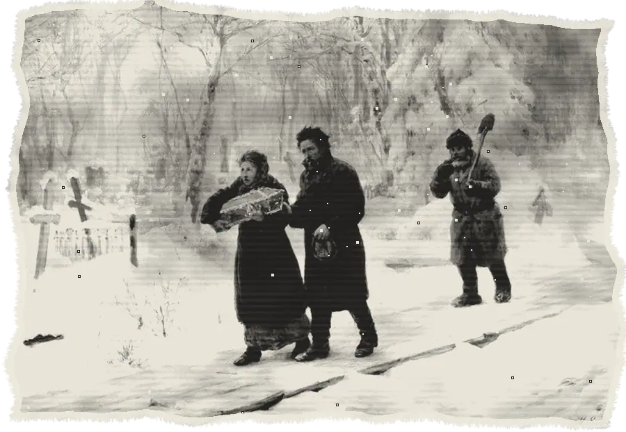

VOL. I · PLATE C · 03 / 09
THE RITUAL
Days three, nine, forty
The most confidently repeated ‘Russian funeral custom’ is also the one most often misdescribed: the commemoration on the third, ninth and fortieth day is a liturgical scheme before it is a folk one.
Liturgical sources 17th–19th c.; practice recorded 19th–21st c. · Russia; Orthodox parishes · Orthodox Christianity; folk elaboration

C / 01
The shape of the forty days
The commemoration of the dead on the third, ninth and fortieth day after death is set out in Orthodox handbooks, and the reasons given there are theological and not calendrical. The Novaia Skrizhal’ (‘New Tablet’) of Archbishop Veniamin of Nizhny Novgorod (1739–1811), in its chapter of notes common to all funerals, § 2, gives more than one set. It cites Neophyte of Rhodes: the third day stands for Christ’s three days before the Resurrection, the ninth is a petition that the dead be numbered among the nine ranks of angels, and the fortieth echoes the forty days the people of Israel mourned Moses. It cites Simeon of Thessalonica, for whom the fortieth day recalls the Ascension, on the fortieth day after the Resurrection. And it adds its own reasoning: forty is a number Scripture sanctifies again and again, as in Moses’ fast, Elijah’s journey and Christ’s forty days with the apostles after the Resurrection.
The same section sets aside one explanation. Some say, it reports, that the body changes its look on the third day, decays on the ninth and that the heart itself decays by the fortieth, but these reasons ‘do not always agree with experience’. The prayers are for the forgiveness of sins and for the soul’s place among the saints and the angels. The handbook does not mention the explanations recorded in villages, that the soul visits the house for three days or is examined on the ninth. For the fortieth day, Zelenin (1927, §§ 132, 136) records that the soul was thought not yet to have left before then, and that on that day it was ‘seen off’.
| Moment | Documented in the handbook | Recorded in villages (Zelenin 1927) | Confidence |
|---|---|---|---|
| Third day | Christ's three days before the Resurrection (Neophyte of Rhodes); other writers cited tie it to the Trinity and the three virtues | Day of burial. Handwashing over threshold; meal opened with kutia; first spoonful/glass set for the soul on the window (Kremleva 1999, pp. 527–528; Zelenin § 136) | documented / documented |
| Ninth day | Petition to number the dead among the nine ranks of angels | Quiet family meal for kin and washers; belief that soul begins passing ordeals; fresh water and pancake on the window (Kremleva 1999, p. 529) | documented / documented |
| Fortieth day | Mourning of Moses (Neophyte); the Ascension (Simeon of Thessalonica); the forty of Scripture | Seeing off the soul (provody); linen taken from window, deceased's bed/figure dismantled; feast with kutia, ladder cakes, seeing-off to village boundary (Kremleva 1999, pp. 529–530; Zelenin §§ 132, 136) | documented / documented |
| Anniversary | Kin keep the memory every year, which shows the dead live on with them in soul (Simeon, as cited) | Deceased joins the ancestral collective (roditeli); panikhida, grave visit, family meal (Kremleva 1999, pp. 530–531) | documented / documented |
| Radonitsa | Tied to Easter: in the Church’s present rule, the Tuesday of the second week after it | Zelenin gives the Thursday of the second week; the Easter egg is kissed and buried in the mound or laid on it (§ 136) | medium / documented |
C / 04
Against the survival story
Nineteenth- and early twentieth-century scholarship often read Russian funerary practice as a survival of pre-Christian religion with the Church laid over it. Zelenin (1927, § 154) writes that the bliny of Maslenitsa ‘undeniably’ show that the festival was once given to the commemoration of the dead: a reading of exactly this kind. A. K. Baiburin’s study of ritual in traditional culture, as the earlier edition summarised it and as this edition has not re-read it, treats ritual as a system of signs with its own internal logic, not as a fossil of an earlier belief, and holds that what a rite ‘originally meant’ is usually not recoverable from the surviving evidence.
This atlas therefore marks origin claims as interpretations. The forty-day cycle is documented as Christian. Whether some households also understood it as an older calendar is a question the sources used here cannot settle.
C / 05
Who does the work: one Vologda case
Elena Samoilova’s article on figures in North Russian funerals reports, from villages of Nyuksenitsa district in Vologda province, a ‘substitute for the dead’ that after the burial was made from the dead person’s clothing and stood in the red corner of the house until the fortieth day. Her base is field notes of 2006–2009 and O. Konshin’s notes of 1996, whose originals burned with the district centre in 2007 and were partly restored from his memory. Two accounts describe the same make-up: an undershirt rolled up, a headscarf round it, no knots, and one corner of the scarf pulled over the face. Both were made for women who died old. In one, recorded in 1996, a friend of the dead grandmother told the family to make a figure from her clothes; in the other, recorded in 2009, a neighbour said it should be seated in the corner until the fortieth day and carried out ‘when they begin to commemorate’. An informant explained the covered face: the figure ‘is not alive’.
Samoilova reads the pattern as follows. In both cases someone who knew the custom started it, not the closest kin, which she takes as a sign that the practice had passed to people who hold ritual knowledge. She offers as a working guess that a figure was made only for a respected person who died of old age. At the same time, in the district, food and water were put in front of the figure, and an informant says the plate stayed ‘until the fortieth day’. A farmer’s cloth double of his wife made in 2010 is a separate case, which she leaves open as either a revived custom or an invention. Her evidence is small: three cases for 1910–1940, from four named informants, plus the later ones. The article is read here from the owner’s PDF, pp. 251–255 and 265–268 closely, and the rest searched, not read through.
C / 07
The lament: spontaneous, and rehearsed
Lamenting is the part of the ritual most often described as raw feeling. Barsov, publishing in 1872, called the laments immediate outpourings of the thoughts and feelings that loss provokes. Elena Yugai, working from interviews in several districts of Vologda Oblast with women mostly born in the 1920s–1940s, reports two kinds of lamenter in their stories: a paid specialist, and a bereaved relative who begins to lament without having planned to. The second is the one the stories are about. The same women also describe preparing: practising alone in remote places, listening closely to experienced lamenters, sometimes learning from an old woman for payment. Yugai says this training had to be kept out of sight, since the appearance of spontaneity and personal involvement belonged to the performance, and that grief itself is spoken of as the teacher.
On function she reads the laments as ritual texts with a melody that imitates weeping, addressed to the dead. At a funeral they help move the deceased into the status of an ancestor, at a commemoration they secure the protection of dead relatives, and they limit the grief of widows and orphans. This is an interpretation by one researcher, from Vologda material only, and it sets itself against both Barsov’s romantic reading and the women’s own account. The atlas keeps both: what the women say they do, and what the researcher says the rite does.
C / 08
What the handbook says about wailing
The same Novaia Skrizhal’ (ch. XX, § 15, ‘The use of the funeral lament’) is not friendly to wailing. It says it was noticed long ago that women who, tormented by unreasoning despair, in torn clothes and with loose hair, cry out at the death of those close to them do not soften the pain but increase it and rouse others to the same weeping and praise of the dead. It recalls that the Council of Carthage forbade bishops to add their own mournful chants or eulogies to the prayers fixed by councils, and readers to use ‘wedding exclamations’ in place of church singing. The Church nevertheless allowed some mournful hymns of its own, the handbook says, to turn attention to death and the life to come, and it names the troparion sung at the end of the rite, which speaks as if with the dead person’s voice and calls friends and kin to weeping.
The passage is about ancient women’s wailing in general and about clerics who improvised; it does not name Russian peasant laments, and the atlas does not claim it was aimed at them. It does show that a handbook current in Russia from 1803 treats set church lament as acceptable and improvised lament as a fault.

Text
Frost, Red Nose (excerpt)
Мороз, Красный нос (отрывок)
Original
English translation
Excerpt Lines 260–275 of the poem: the laying out of Prokl. The funeral lament that follows is Nekrasov's literary composition, not a recorded folk text.
Frost, Red Nose (1863–64) is a narrative poem about the death of the peasant Prokl and the grief of his widow Daria. The excerpt describes the laying out of the body: the silence in the house, the candle at the head, the wide linen shirt, the new bast shoes, the calloused hands. Nekrasov drew on ethnographic material, and contemporaries read the poem as a picture of peasant life, but it is not a transcript of a ritual.
The poem's funeral lament, which follows this passage, is Nekrasov's literary composition. The atlas does not present it as a folk lament; for recorded laments, see Plate G. The excerpt is printed as a literary image of the ritual, not as evidence of what was said or done.
- холщовая рубаха
- A shirt of coarse linen; the dead man is dressed in clean, plain cloth.
- лапти
- Bast shoes, woven from linden bark; the new pair marks the seriousness of the preparation.
- свеча в головах
- A candle at the head of the dead; a standard element of Orthodox laying out.
Source N. A. Nekrasov, «Мороз, Красный нос» (1863–64), part I, ch. VIII, lines 260–275. · open source
Rights Public domain. Nekrasov died in 1877; the poem was published in 1863–64. Public domain in Russia and in the United States. The text follows the Wikisource transcription of Polnoe sobranie sochinenii i pisem (1981–2000), vol. 4, part I, ch. VIII, lines 260–275.


Apparatus sources · related plates · terms
Sources for this plate
- skrizhal Veniamin (Krasnopevkov-Rumovskii), Archbishop — Novaia Skrizhal’ (1803 (read in a modern online edition))
- baiburin1993 Baiburin, Albert Kashfullovich — Ritual v traditsionnoi kul’ture (1993)
- shevzov2003 Shevzov, Vera — Russian Orthodoxy on the Eve of Revolution (2003)
- barsov1872 Barsov, Elpidifor Vasil’evich — Prichitaniia Severnogo kraia (1872–1886)
- azbyka-radonitsa2024 Azbyka.ru news desk (unsigned) — В России православные отмечают Радоницу (2024)
- yugai2018 Yugai, E. F. — Актуализируя причитания: взгляд причитальщицы на импровизацию в конце ХХ–ХХI вв. (2018)
- zelenin1927 Zelenin, Dmitry K. — Vostochnoslavianskaia etnografiia (Russian translation of Russische (Ostslavische) Volkskunde, Berlin–Leipzig 1927), transl. K. D. Tsivina (1991 (German original 1927))
- samoilova-figures Samoilova, Elena — Antropomorfnye figury v kontekste pokhoronno-pominal’noi obriadnosti severnorusskoi derevni (n.d. (volume year not shown on the pages; the PDF was made in 2011))
- nekrasov1863 Nekrasov, Nikolai Alekseevich — Moroz, Krasnyi nos (1863–1864)
- kremleva1999 Kremleva, Irina A. — Pokhoronno-pominalnye obychai i obriady [Funeral and Memorial Customs and Rites] (1999)
- gromyko1991 Gromyko, Marina Mikhailovna — The World of the Russian Village [Мир русской деревни] (1991)
- zelenin1916 Zelenin, Dmitry K. — Очерки русской мифологии. Вып. 1: Умершие неестественною смертью и русалки (1916)
URLs, access dates and limitations are in the bibliography.
Related plates
Terms in this plate
Citation
Archaeology of Russian Death. Plate C: THE RITUAL. Days three, nine, forty // An Atlas of Material Culture and Ethnography. 2026. URL: https://DmitryLeLeE.github.io/rus_death/plates/c-ritual.html.